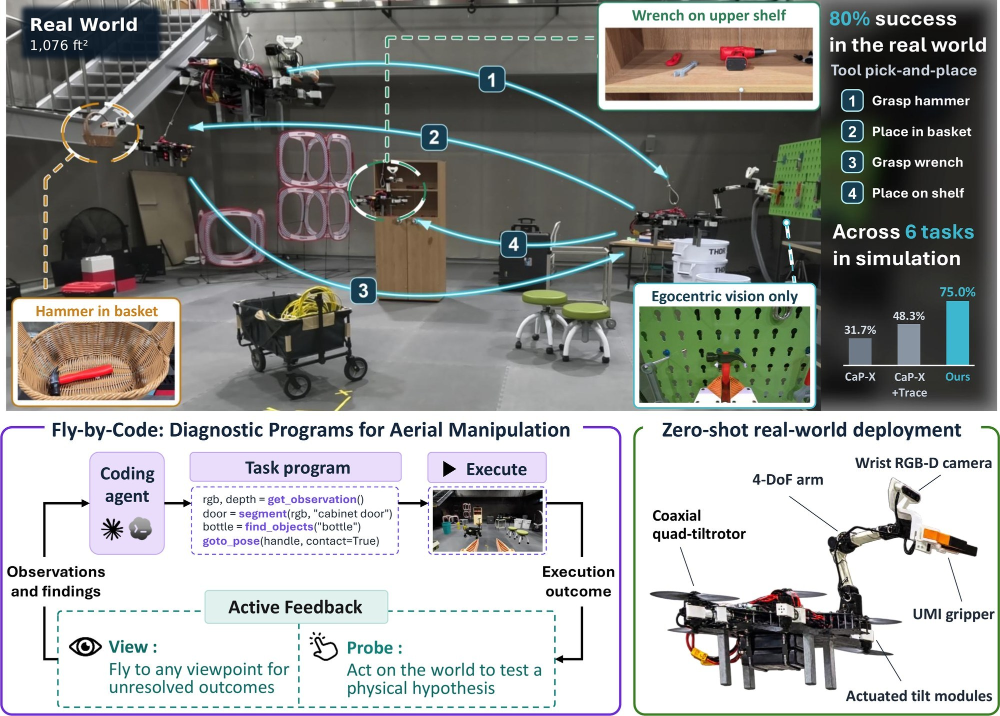
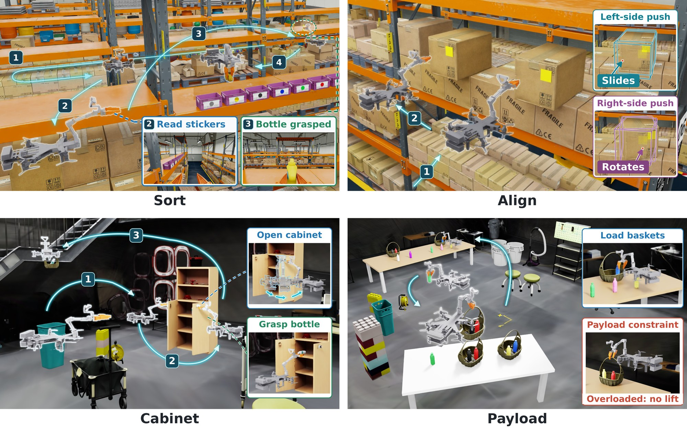
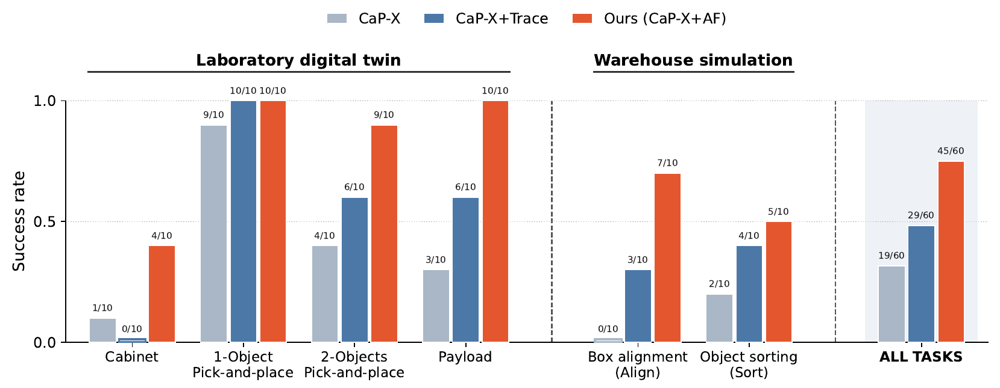
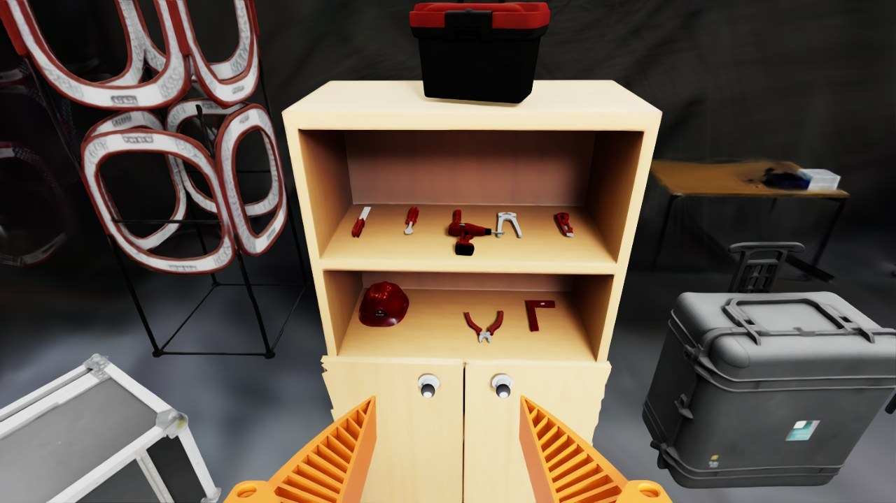
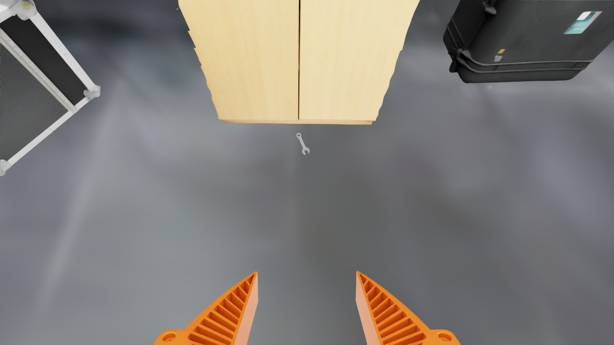
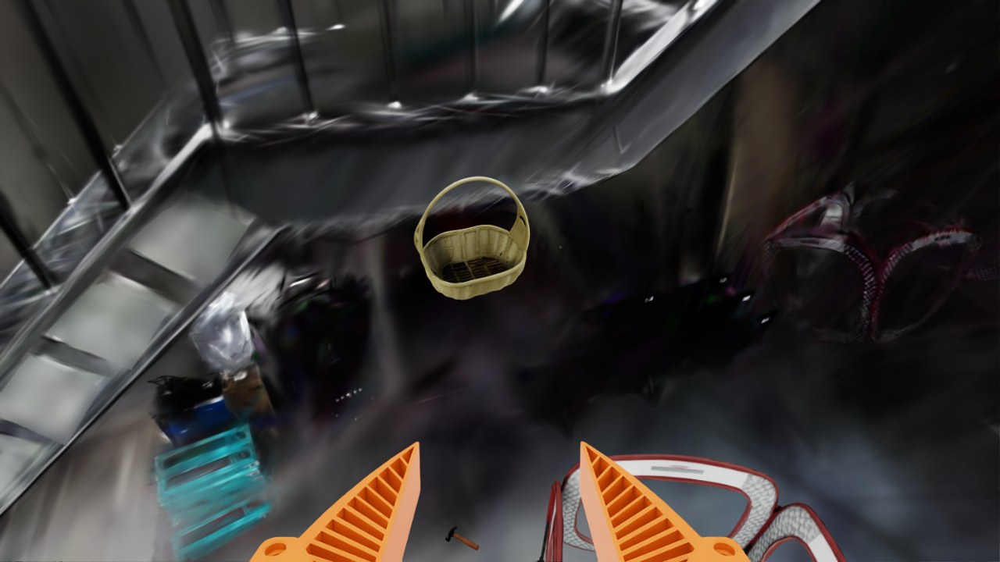
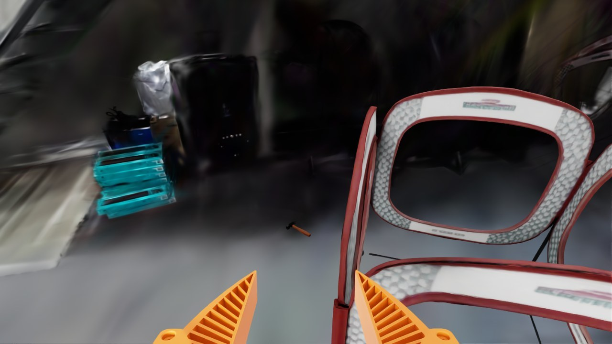
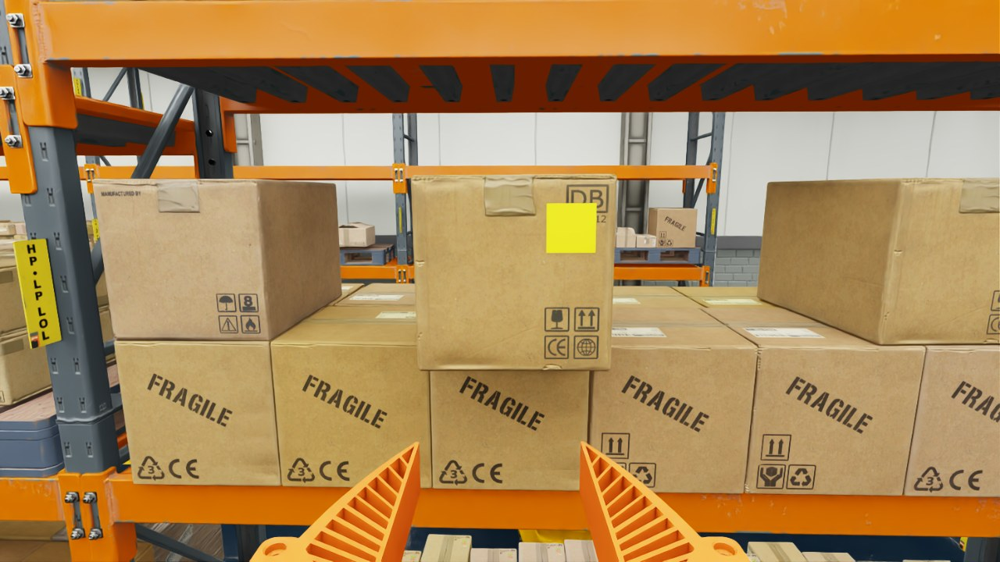
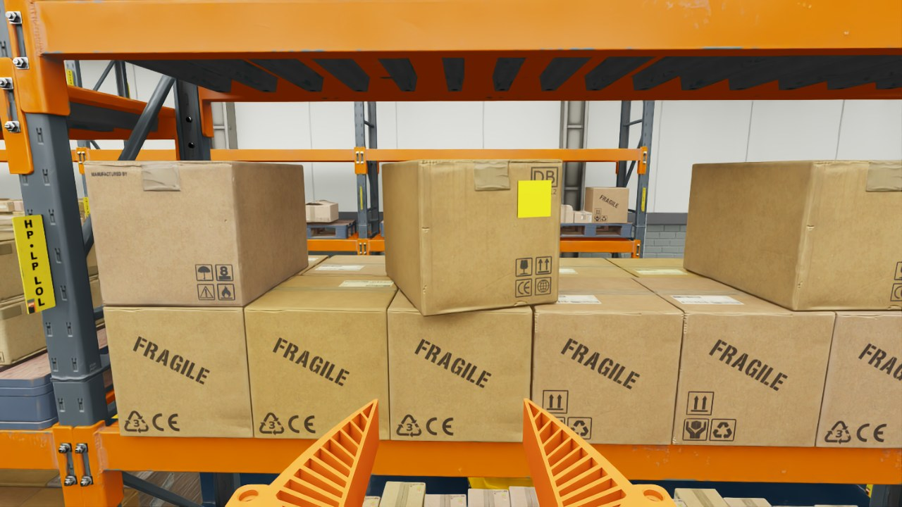
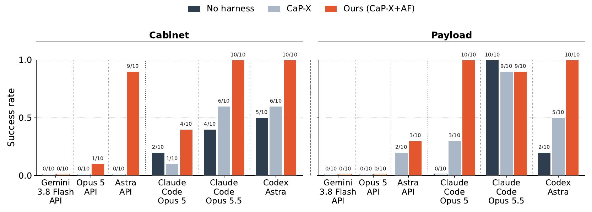

1Long-horizon tool pick-and-place
- Real robot
- Zero-shot from simulation
- 4/5 full-task success
- 4× speed
Task. Find the hammer and place it in the basket, then place the wrench on the cabinet’s upper shelf.
Real-world demos · programs synthesized in simulation, run on the physical robot without source-code changes
Task. Find the hammer and place it in the basket, then place the wrench on the cabinet’s upper shelf.
Task. Open both cabinet doors, find the water bottle inside, and deliver it to the hanging basket.
Each run is roughly 8–9 minutes of autonomous operation on a custom aerial manipulator (coaxial quad-tiltrotor, 4-DoF arm, wrist RGB-D camera). Trials vary the initial robot position and heading, and the physical scene differs from the simulated one. Videos play muted when they scroll into view.

Fly-by-Code resolves visual and physical ambiguities in open-workspace aerial manipulation with Active Feedback (AF). After executing a task program in simulation, the agent synthesizes a diagnostic program that acquires informative viewpoints (View) and conducts targeted physical tests (Probe), returning evidence for completion assessment and program revision. Through shared robot APIs, the refined programs deploy zero-shot to a physical aerial manipulator without source-code modification.
| Task | Stage | Successful trials |
|---|---|---|
| Tool pick-and-place | Grasp hammer | 5/5 |
| Place hammer in basket | 4/5 | |
| Grasp wrench | 5/5 | |
| Place wrench on shelf | 5/5 | |
| Full task | 4/5 | |
| Cabinet (water-bottle delivery) | Open left door | 5/5 |
| Open right door | 4/5 | |
| Grasp bottle | 4/5 | |
| Place bottle in basket | 3/5 | |
| Full task | 3/5 |
Denominators include all evaluated trials per task, including those that did not reach a stage.
Embodied coding agents are a promising approach to constructing robot policies from natural-language instructions. However, extending these agents beyond tabletop scenes to open-world aerial manipulation introduces two fundamental challenges: 1) partial observability and 2) limited interaction robustness. Because of payload constraints, aerial manipulators rely on limited sensor arrays, which exacerbates partial observability and complicates execution feedback in open workspaces. Furthermore, inherent control limitations and strong dynamic coupling make physical interactions highly fragile, rendering naive trial-and-error strategies unsafe and impractical for aerial tasks. To address these challenges, we introduce Active Feedback (AF), an active “View and Probe” framework. Following each task execution, the agent synthesizes a separate diagnostic program to autonomously seek out informative viewpoints and perform targeted physical interactions, directly resolving visual and physical uncertainties. Using the robot’s sensing and action functions, this program selects new camera views or performs physical tests in simulation, returning observations and measurements to the agent. Across six aerial manipulation tasks in two simulated environments, AF increases final task success from 31.7% to 75% relative to terminal feedback, using the same coding-agent configuration and task-execution limit. Crucially, these simulation-synthesized programs transfer directly to a physical aerial manipulator via shared APIs and successfully execute complex long-horizon tasks in the real world. These findings show that executable diagnosis helps embodied coding agents address gaps in execution feedback, improving both completion assessment and program refinement for autonomous aerial manipulation.
Standard execution feedback is a passive byproduct of a task trajectory. An egocentric camera couples its viewpoint to the robot’s flight, so the outcome of an action often lies outside the terminal field of view; and a static terminal image cannot tell whether a failed interaction came from contact geometry or a violated physical constraint. Fly-by-Code inserts an executable diagnostic stage between task-program execution and the decision to finish or regenerate the program.

Bottom: the program refinement loop. The coding agent translates a task prompt into policy code using shared robot APIs; after execution it enters the Active Feedback stage and refines the program until it decides to stop. Top: during AF, the agent synthesizes a diagnostic program. View navigates to informative viewpoints (e.g., inspecting a basket from above to verify placement). Probe conducts diagnostic physical tests (e.g., testing door articulation with an arc motion after a straight pull fails).
After a task attempt, the agent reads the console log, terminal observation and semantic-map summary, names the uncertainties this passive evidence leaves open, and writes a separate program — with the same robot APIs as the task program. This is a diagnostic step: the program does not try to complete the task, it gathers the additional information the next decision needs.
Using the semantic map as a spatial reference, the diagnostic program flies the robot to vantage points that reveal outcomes the terminal frame cannot — for example, looking down into a basket to confirm a placement.
The task score is recorded before AF, so diagnosis is never penalized. The environment then resets its physical state, while the feedback AF produced — the acquired views themselves, the agent’s notes on them, and the measured values — is passed back to the agent and drives the FINISH / REGENERATE decision and the next program.
Contact responses, payload limits and articulation constraints are invisible to inspection, so the program probes them through physical interaction — pushing a box at different contact points, or test-lifting a candidate load.
Six tasks in two simulated environments, a warehouse and a laboratory digital twin, range from spatial object transport (1-Object and 2-Objects Pick-and-place, Object sorting) to contact-rich interaction with articulated structures (Cabinet), unknown payload constraints (Payload), and contact-dependent pushing (Box alignment). A shared execution backend handles collision-aware whole-body motion planning and tracks trajectories under simulated flight dynamics.

Sort: identify the target bottle and place it into the color-matched bin. Align: push protruding boxes flush with the rack; offset centers of mass make different contact points produce translation or rotation. Cabinet: open the cabinet door, retrieve the bottle inside, and deliver it to a hanging basket. Payload: transport objects under an undisclosed payload limit, using baskets for multiple items while avoiding lift failures.
We build on the CaP-X program-generation and execution loop and compare three feedback conditions that share the same perception, control and semantic-map APIs, and the same skill library: CaP-X (execution logs and the terminal RGB observation), CaP-X+Trace (additionally, per-primitive call records and execution keyframes), and Ours (CaP-X + Active Feedback). Each revised program runs from the initial state and must perform the full task. The primary agent is Claude Opus 5 in a persistent session.

Final task success across six tasks (10 trials per task and method). AF achieves the highest success overall and matches or exceeds both baselines on every task; the gap is widest where the task depends on extended physical sequences (2-Objects) or hidden physical constraints (Payload, Cabinet).
Baselines often declare success from unverified execution signals — for example, taking an open gripper as proof of placement. AF gathers visual and physical evidence first: across 60 trials it makes only 5 false completion declarations, against 25 for CaP-X and 19 for CaP-X+Trace.
| Method | Per task (TP / FP / ND) | Overall | ||||||
|---|---|---|---|---|---|---|---|---|
| Cabinet | 1-Obj P&P | 2-Obj P&P | Payload | Align | Sort | TP / FP / ND | Precision | |
| CaP-X | 1/1/8 | 9/1/0 | 4/5/1 | 3/6/1 | 0/10/0 | 2/2/6 | 19/25/16 | 43.2% |
| CaP-X+Trace | 0/3/7 | 10/0/0 | 6/3/1 | 6/3/1 | 3/7/0 | 4/3/3 | 29/19/12 | 60.4% |
| Ours (CaP-X+AF) | 4/1/5 | 10/0/0 | 9/1/0 | 10/0/0 | 7/3/0 | 5/0/5 | 45/5/10 | 90.0% |
TP: correct completion declaration. FP: incorrect declaration. ND: step limit reached without a declaration. Precision = TP / (TP + FP).
Two recorded trials, excerpted verbatim from the agent’s own analysis, code and console (omissions marked […]). Image notes were written by the agent before capture and state inspection questions, not conclusions.
hammer done: True [...] wrench done: True
What actually happened: neither placement held. The hammer fell out of the basket and the wrench fell off the shelf, both onto the floor (simulator ground truth, hidden from the agent).
“The previous program reports both parts done, but neither is confirmed.”
Hammer. […] “That shows the hammer left the hand, not that it landed inside the basket. It could have dropped beside the basket or onto the stairs. I need a view looking down into the basket.”
Wrench. […] “I need to look at the upper shelf more closely from above, then at the lower shelf and the floor in front of the cabinet, and write down where the wrench actually is.”
def look(target, offsets, note): target = np.asarray(target, float) for off in offsets: vp = target + np.asarray(off, float) if go(vp, target - vp): return get_observation(note=note) # [...] fl = np.array([3.55, cc[1], 0.05]) o = look(fl, [[-0.8, 0, 1.0], [-1.0, 0.3, 1.1]], "Floor in front of the cabinet's open face: did the wrench fall to the floor?") report(o, ["wrench"])




[wrench] score 0.91 [...] med [ 3.567 0.953 -0.009] [...] [hammer] score 0.92 [...] med [ 2.463 3.979 -0.009] [...]
REGENERATE — the next program adds a release-and-hold routine, revises the hammer release pose, and tries deeper wrench placements.
def release_and_hold(): open_gripper() p = pos() goto_pose(p, settle=True) # hold still ~3 s so the object drops free get_observation() open_gripper()
The trial succeeded on the fourth task execution. The case shows AF producing evidence against a reported completion and directing the revision; the immediately following repair was not yet sufficient on its own.
After repeated pushes kept rotating a carton, the agent used AF to compare contact locations and sideways slides.
“My working guess is sideways friction drag.” […]
“I need controlled experiments to learn how much each action twists the carton: centre push, high-edge push, low-edge push, and a push followed by a small sideways slide while still in contact.”
The program tested these actions one after another on an unpushed carton, returning to a common viewpoint after each probe to measure the response from RGB-D observations.
open_gripper() # [...] exps = [("centre", 0.0, 0.0), ("hi-edge", +1, 0.0), ("lo-edge", -1, 0.0), ("centre+drag+y", 0.0, +0.015), ("centre+drag-y", 0.0, -0.015), ("hi-edge", +1, 0.0)] for name, where, drag in exps: # [...] r = go(G, approach=N, z_approach=0.15, allow_contact=True, settle=True) # [...] if drag != 0.0 and r: G2 = G + np.array([0.0, drag, 0.0]) go(G2, approach=N, allow_contact=True, settle=True) # [...] # [...] f2, s2 = measure_B("after " + name)
RESULT centre: centre moved 0.0285, yaw change -3.17 deg RESULT hi-edge: centre moved 0.0385, yaw change -0.31 deg RESULT lo-edge: centre moved 0.0241, yaw change -4.01 deg RESULT centre+drag+y: centre moved 0.0439, yaw change -4.56 deg RESULT centre+drag-y: centre moved 0.0426, yaw change -4.75 deg RESULT hi-edge: centre moved 0.0430, yaw change -2.11 deg
The first high-y edge push produced less rotation per unit of advance than the centre and low-y edge pushes. Neither sideways slide reversed the rotation.


REGENERATE — the next program used the observed responses to select the lateral contact position.
# ---------------- twist model: yaw change (deg) per cm of push = alpha + beta*u ---------------- # u = contact offset from face centre / half-width (+ toward +y). Prior from observed pushes: # centre push twisted ~ -1 deg/cm, push 0.8 half-widths toward +y twisted ~ -0.2 deg/cm. twist_data = [(0.0, -1.0, 1.0), (0.8, -0.2, 1.0), (-0.8, -1.7, 0.5)] # [...] beta, alpha = np.polyfit(u, r, 1, w=np.sqrt(w)) # [...] u = float(np.clip((rate_des - alpha) / beta, -0.82, 0.82)) yp = yc + u * w / 2.0
Largest remaining protrusion: 26.1 cm before AF → 2.6 cm in the next execution.
AF matches or exceeds the CaP-X baseline for every evaluated model and interface on Cabinet and Payload — for example, Cabinet rises from 0% to 90% with the Astra API, and Payload from 30% to 100% with Claude Code Opus 5. A No harness condition, which receives a superset of the execution evidence (full raw videos and console logs) and may inspect it freely, reaches 20–50% on Cabinet: unstructured access to more data does not substitute for synthesizing a targeted diagnostic program.

Final task success across models and agent interfaces on Cabinet and Payload (10 trials per task and condition).